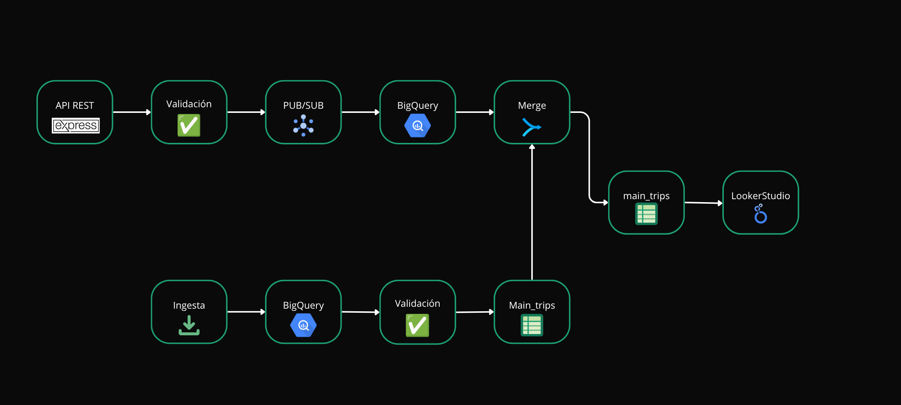
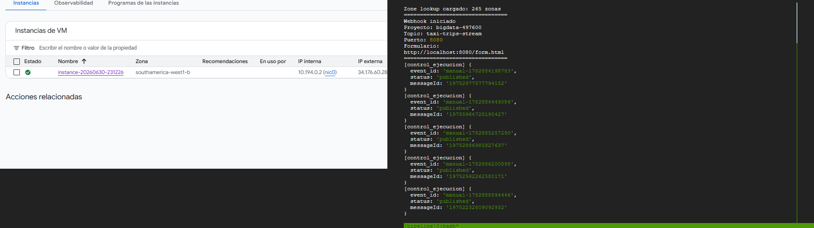
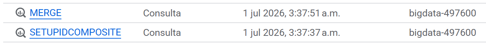

Este informe describe la implementación de una arquitectura de procesamiento batch y streaming para datos de NYC Yellow Taxi. Debido a la inexistencia de una fuente pública de eventos en tiempo real, se simuló el streaming mediante la reproducción controlada de archivos históricos Parquet. La solución integra eficientemente Google Cloud Storage, Pub/Sub, Compute Engine, BigQuery y Looker Studio.
Integrante: Diego Quioza
Profesor: Andrés Alexis Leiva Hernández

Estrategia orientada a eventos para capturar de manera segura y escalable cada transacción originada por los vehículos de la flota de NYC.
Se crea y configura una máquina virtual optimizada en Compute Engine que aloja una API REST construida en Express (Node.js), la cual recibe eventos continuos mediante peticiones HTTP POST estructuradas.
El servidor valida instantáneamente la estructura del JSON entrante, calculando de forma dinámica métricas operacionales clave y cruzando los IDs geográficos antes de pasarlo a la red de mensajería.
Los eventos que no logran superar el esquema o presentan inconsistencias lógicas graves son descartados del flujo principal y enviados a un tópico de contingencia Dead Letter para resguardar la pureza de la data.

Aplicación de reglas de calidad de datos, transformaciones analíticas en tránsito y el proceso de persistencia en el Data Warehouse.
Validaciones estrictas sobre la obligatoriedad de campos primarios, consistencia temporal de marcas de tiempo (pickup/dropoff) y positividad en montos de tarifas facturadas.
Cálculo de atributos sintéticos: trip_duration_min, fare_per_mile, tip_pct, segregación temporal por year, month, day_of_week, pickup_hour y resolución de nombres de zonas.
Los datos enriquecidos se vuelcan automáticamente en la tabla intermedia trips_stream_raw en BigQuery de manera directa para minimizar latencias.
Mecanismos implementados para asegurar la idempotencia, consistencia e integridad referencial entre flujos concurrentes.
Filtros preventivos combinados con alertas tempranas. El uso combinado de validaciones en código y tópicos paralelos asegura resiliencia total ante formatos corruptos.
Uso de un trip_id determinístico combinado con una llave compuesta composite_id. Permite mitigar el riesgo de duplicados por retransmisiones de red de Pub/Sub.
Monitoreo activo de la salud del pipeline y del rendimiento de la inyección a través de la exposición de métricas internas en el endpoint especializado /control-ejecucion.
Una consulta programada ejecuta operaciones MERGE recurrentes cada 5 minutos, uniendo la data en streaming de trips_stream_raw con la tabla maestra unificada main_trips.
Resolución de cuellos de botella detectados durante fases de estrés y escalabilidad del almacén analítico.
Durante los despliegues iniciales, se detectó que la sentencia periódica MERGE realizaba escaneos completos (Full Table Scans) sobre la tabla de producción, elevando los costos financieros y de cómputo de manera exponencial a medida que crecía el histórico.
Se reestructuró la tabla principal main_trips aplicando:
PULocationID y DOLocationID.require_partition_filter para bloquear consultas ineficientes.
La arquitectura híbrida y orientada a eventos implementada demuestra con éxito la viabilidad técnica de desplegar flujos robustos de ingesta, transformación estructural y analítica, y visualización integrada de grandes volúmenes de datos en streaming bajo el ecosistema de Google Cloud Platform.
La estrategia de simulación programada mediante el replay controlado de los archivos históricos en formato Parquet permitió emular un entorno real de producción streaming sin incurrir en costos redundantes de proveedores externos.
Los esquemas de deduplicación determinística basados en llaves compuestas y el aislamiento rápido mediante colas de error (Dead Letter) garantizan la entrega de datos limpios, consistentes y listos para la toma de decisiones.